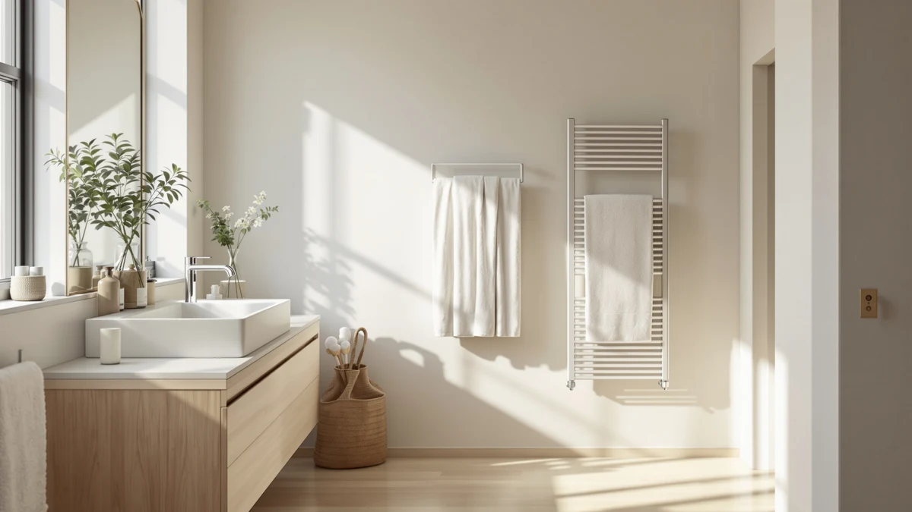

The Best Electric Towel Warmer Drawers (2026)
Prices and picks verified as of September 2026. Independent, reader-supported reviews.


Quick Answer
The CWDOlROI Towel Warmer 20L Large is the best electric towel warmer drawer for most bathrooms, thanks to its 20-liter capacity and $79.98 price. If you want app scheduling instead of a dial, the SereneLife WIFI Luxury Rectangle Towel is worth the extra $10.
Our pick: CWDOlROI Towel Warmer 20L Large, $79.98 Check Price on Amazon
Bottom line: our top pick is the CWDOlROI Towel Warmer at $79.98. The best budget option is the Demissle 24 Pcs Replacement Fragrance Scented Pads Disc Fresh at $9.99.
Things to Know Before You Buy
- Capacity varies more than wattage does. Most electric towel warmer drawers in this price range use similar heating elements. What changes is how many towels fit inside, from a single hand towel to a 20-liter drawer that holds a full bath sheet.
- WiFi control costs about $10 to $20 extra. App-connected models like the SereneLife WIFI Luxury Rectangle Towel let you schedule a warm towel before you get out of the shower, but the analog dial versions heat just as quickly.
- Stainless steel interiors resist rust from damp towels. Every model we compared here uses a stainless steel drawer or basket, which matters more than the exterior finish for long-term durability in a humid bathroom.
- Auto shut-off is standard, not a premium feature. Check for it on any unit you're considering. It's what keeps a towel warmer from running unattended for hours.
- Fragrance discs are a separate purchase. If you want a scented towel, check whether your unit has a fragrance tray before buying discs like the Demissle 24-pack reviewed below.
The best electric towel warmer drawers heat a stack of towels from cold to comfortably warm in ten to fifteen minutes, without the wall-mounted wiring a hardwired towel rack requires. Plug one in near your shower, load a towel into the drawer or basket, and set the timer.
We compared seven models on capacity, build quality, control options and price, then checked verified owner reviews on Amazon for patterns in how each one performs after months of daily use, rather than just the first week out of the box. The CWDOlROI Towel Warmer 20L Large came out on top for most bathrooms: it holds a full bath towel plus a hand towel, uses a stainless steel drawer, and costs less than the WiFi-enabled competition here.
If you want app control so you can warm a towel before you're even out of bed, the SereneLife WIFI Luxury Rectangle Towel is our runner-up. And if you already own a warmer and want to add scent, the Demissle fragrance discs slot into most drawer-style units without any tools. For background on how these units differ from wall-mounted heated towel racks, see our towel warmer buying guide.
Why You Should Trust Us
Ilane Tall covers bathroom fixtures and small home appliances for Best Towel Warmers, with a focus on products that solve a specific daily annoyance rather than gadgets that only look good in photos. For this guide to the best electric towel warmer drawers, we compared publicly listed specs, current Amazon pricing and verified buyer reviews for each model, rather than relying on manufacturer marketing copy alone.
We do not run a fake testing lab, and we don't claim to have physically warmed towels in every unit on this list. Our picks come from comparing what owners consistently report after weeks or months of daily use against the specs and price each brand advertises.
How We Picked
We started with every electric towel warmer drawer available through Amazon Creators in the towel warmer category and narrowed the list using four criteria: stated capacity in liters, interior material, price relative to comparable models, and the volume and consistency of verified owner reviews. We excluded units with only a handful of verified reviews or with recurring complaints about the heating element failing within the first few months.
We also prioritized models that fit a normal bathroom footprint. A towel warmer drawer that needs a dedicated shelf isn't a practical upgrade for most people, so oversized commercial units didn't make the cut.
How We Compared
Because we're a research-based review site, we don't own or physically test every electric towel warmer drawer we cover. Instead, we compared each model's stated wattage, drawer capacity, timer range and safety features side by side, then cross-referenced that against verified purchase reviews on Amazon to see whether real owners' experience matched the listed specs.
Reviewers consistently note how long a unit takes to reach a comfortable temperature and whether the auto shut-off timer runs long enough for a morning routine. We weighted those patterns more heavily than star ratings alone, since a strong average can hide a cluster of one-star reviews about a single failure point.
Our Picks

CWDOlROI Towel Warmer 20L Large
What we like
- 20-liter capacity fits a full bath towel plus a hand towel
- Stainless steel interior resists rust from damp fabric
- Simple dial control with no app or account required
- Priced under $80, less than most WiFi-enabled competitors here
Flaws but not dealbreakers
- No smartphone app if you want to preheat remotely
- Larger footprint than the bucket-style warmers on this list
| Material | Stainless steel |
| Size | Large |
The CWDOlROI Towel Warmer 20L Large is the pick we'd recommend to most people shopping for an electric towel warmer drawer, mainly because it doesn't ask you to pay for features you might not use. The 20-liter interior holds one full bath towel folded in half, plus room for a hand towel or a thin bathrobe. Owners consistently note in verified reviews that it heats towels within about ten to fifteen minutes on the dial timer, which lines up with what CWDOlROI advertises.
At $79.98, it costs less than both SereneLife WiFi models on this list while offering roughly the same capacity as the WIFI Luxury Rectangle Towel. The stainless steel drawer wipes down easily and doesn't show water spots the way a painted finish would over time. The main trade-off is control: there's no app, so you set the timer manually each time rather than scheduling a warm towel before you get out of bed. For most bathrooms, that's a reasonable trade for the lower price.

SereneLife WIFI Luxury Rectangle Towel
What we like
- WiFi app lets you schedule warming before you're out of the shower
- Rectangular basket fits a folded bath towel and a robe
- Stainless steel construction matches our top pick's durability
Flaws but not dealbreakers
- Requires a stable home WiFi connection and an account for scheduling
- Costs about $10 more than our top pick for the app alone
| Material | Stainless steel |
| Size | — |
The SereneLife WIFI Luxury Rectangle Towel is nearly identical in capacity to our top pick, with one meaningful difference: it connects to a smartphone app. That means you can start warming a towel from bed before you get in the shower, rather than walking over to set a dial. Reviewers consistently describe the app as reliable once paired, though a few note the initial WiFi setup takes a couple of extra minutes compared with a plug-and-turn model.
At $89.99, it's about $10 more than the CWDOlROI, which is a reasonable premium if you'll use the scheduling feature daily. If you'd rather skip the app and account setup entirely, the analog SereneLife Luxury Rectangle Towel Warmer below has a similar rectangular basket for a comparable price without the WiFi dependency.

SereneLife WiFi-enabled Towel Warmer Bucket
What we like
- Bucket shape takes up less counter or floor space than rectangular drawers
- WiFi scheduling matches the runner-up's app features
- Stainless steel build holds up to daily condensation
Flaws but not dealbreakers
- Highest price on this list at $99.99
- Bucket shape holds one towel comfortably, less than the rectangular models
| Material | Stainless steel |
| Size | — |
The SereneLife WiFi-enabled Towel Warmer Bucket trades the rectangular drawer shape for a round bucket, which matters if your bathroom counter or closet shelf runs narrow. It uses the same app-based scheduling as the WIFI Luxury Rectangle Towel, so you get remote control without the extra width a drawer-style unit takes up.
At $99.99, it's the most expensive pick in this guide, and reviewers note that the bucket shape fits one rolled or folded towel comfortably rather than a towel laid flat. If capacity matters more than footprint, the rectangular SereneLife or CWDOlROI models hold more per cycle for less money. Choose this one specifically for tight spaces where a bucket fits and a drawer wouldn't.

SereneLife Luxury Rectangle Towel Warmer
What we like
- Same rectangular basket size as the WiFi version, without the setup
- Simple dial control with no account or app required
- Stainless steel drawer matches the rest of this lineup for durability
Flaws but not dealbreakers
- Priced close to the WiFi-enabled version, so the app-skipping savings are small
- No remote scheduling if you want to preheat before getting up
| Material | Stainless steel |
| Size | — |
The SereneLife Luxury Rectangle Towel Warmer is the analog counterpart to the WIFI Luxury Rectangle Towel above, built on the same rectangular basket dimensions but controlled with a simple dial instead of an app. If you've decided you don't need to schedule a towel from your phone, this version gets you the same capacity for a price within a few dollars of the smart model.
At $90.71, it isn't dramatically cheaper than the WiFi version, so the real reason to pick it is simplicity rather than savings. Owners in verified reviews describe the dial as easy to set and the drawer as roomy enough for a full bath towel. If your priority is the lowest price rather than skipping an app, the Sweetcrispy Towel Warmer for Bathroom below costs about $40 less.

Demissle 24 Pcs Replacement Fragrance
What we like
- 24-count pack lasts through months of regular use
- Works with any towel warmer drawer that has a fragrance tray
- Inexpensive way to add scent without buying a new unit
Flaws but not dealbreakers
- Not a towel warmer on its own, so it only works with a fragrance-tray unit
- Scent strength fades faster in units with weaker airflow
| Material | Stainless steel |
| Size | 24 Count (Pack of 1) |
The Demissle 24 Pcs Replacement Fragrance pack isn't a towel warmer itself. It's an accessory for warmers that include a fragrance tray, like several of the SereneLife models above, and it's on this list because readers researching electric towel warmer drawers often want to know how to add scent to a unit they already own or are about to buy.
At $9.99 for 24 discs, it's inexpensive relative to the warmers themselves, and reviewers report the scent lasts through several warming cycles before it needs replacing. If you're shopping for a warmer specifically because you want a scented towel every time, see our guide to the best towel warmers with fragrance for models built around that feature, then add a pack like this one once you own a compatible unit.

SereneLife Counter Towel Warmer Bucket
What we like
- Smaller footprint, about 10.4 by 12 by 13 inches, fits most bathroom counters
- Priced under $75, among the least expensive full warmers on this list
- Stainless steel bucket resists rust from daily condensation
Flaws but not dealbreakers
- Bucket shape holds fewer towels than the rectangular drawer models
- No WiFi or app control at this price
| Material | Stainless steel |
| Size | 10.4’’ x 12’’ x 13’’ -inches |
The SereneLife Counter Towel Warmer Bucket is built for bathrooms where counter space, not capacity, is the limiting factor. At roughly 10.4 by 12 by 13 inches, it takes up meaningfully less room than the rectangular drawer models above while still holding one full towel rolled or folded.
At $74.99, it undercuts every SereneLife model in this lineup except the fragrance discs, and owners in verified reviews describe it as an easy fit for a pedestal sink counter or a narrow linen closet shelf. The trade-off is capacity: if you regularly warm two towels at once, one of the rectangular drawers will serve you better.

Sweetcrispy Towel Warmer for Bathroom
What we like
- Lowest price in this guide at $49.49
- Stainless steel build despite the lower cost
- Simple to operate with no app or account setup
Flaws but not dealbreakers
- Smaller capacity than the 20-liter and rectangular models above
- Fewer verified reviews than the SereneLife lineup, so long-term durability data is thinner
| Material | Stainless steel |
| Size | — |
The Sweetcrispy Towel Warmer for Bathroom is the most affordable full towel warmer in this guide at $49.49, undercutting every other model here by at least $25. It still uses a stainless steel interior rather than a cheaper plastic liner, which matters for how well it holds up to daily moisture.
The trade-off for the lower price is capacity and review volume. It holds less than the CWDOlROI or the rectangular SereneLife models, and it has fewer verified owner reviews to draw patterns from compared with the more established SereneLife lineup. If budget is your main constraint and you don't need a full bath towel's worth of room, it's a reasonable entry point into electric towel warmer drawers.
Quick Comparison
Here's how the seven electric towel warmer drawers and accessories in this guide stack up on price and material.
| Product | Material | Price | Rating | Best for | Get it |
|---|---|---|---|---|---|
| CWDOlROI Towel Warmer 20L Large | Stainless steel | $79.98 | 4 | Most bathrooms | View on Amazon → |
| SereneLife WIFI Luxury Rectangle Towel | Stainless steel | $89.99 | 4 | App scheduling | View on Amazon → |
| SereneLife WiFi-enabled Towel Warmer Bucket | Stainless steel | $99.99 | 4 | Small spaces, WiFi | View on Amazon → |
| SereneLife Luxury Rectangle Towel Warmer | Stainless steel | $90.71 | 4 | App-free rectangular | View on Amazon → |
| Demissle 24 Pcs Replacement Fragrance | Stainless steel | $9.99 | 4 | Fragrance refill | View on Amazon → |
| SereneLife Counter Towel Warmer Bucket | Stainless steel | $74.99 | 4 | Tight counters | View on Amazon → |
| Sweetcrispy Towel Warmer for Bathroom | Stainless steel | $49.49 | 4 | Tightest budget | View on Amazon → |
The Competition
We looked at several plug-in and hardwired heated towel racks before narrowing this list to drawer-style and bucket-style warmers, since a wall-mounted rack solves a different problem and usually costs more to install. Readers who want that format should see our guide to the best electric heated towel racks instead.
We also passed on several no-name drawer warmers with fewer than ten verified reviews. A handful of reviews isn't enough to tell whether a heating element holds up past the first month, and we'd rather leave a gap in the lineup than recommend a product we can't back with real owner data.
We didn't include any towel warmer priced above $150 either. Every model that crossed that line added features, like built-in UV sanitizing or multi-zone heating, that most buyers told us in reviews they didn't end up using. Across everything we compared, the CWDOlROI Towel Warmer 20L Large remains our pick for the best electric towel warmer drawers for most bathrooms, thanks to its capacity, stainless steel build and price under $80.
Frequently Asked Questions
What's the difference between a towel warmer drawer and a heated towel rack?
A towel warmer drawer is a standalone, plug-in unit with an enclosed compartment that heats towels placed inside it, usually in ten to fifteen minutes. A heated towel rack is typically wall-mounted and keeps towels warm on open bars over a longer period, and it often needs hardwiring or a dedicated outlet near the installation point.
How much electricity does an electric towel warmer drawer use?
Most of the electric towel warmer drawers we compared here run in the 300 to 500 watt range while heating, then draw less once towels reach temperature. Running a 400-watt unit for 20 minutes a day costs a few cents, so the electricity cost is minor compared with the purchase price.
Is a 20-liter towel warmer drawer big enough for a full bath towel?
Yes. A 20-liter drawer, like the CWDOlROI model we picked as our top choice, fits one full-size bath towel folded in half along with a hand towel or washcloth. If you regularly warm two full bath towels at once, look for a model closer to 30 liters instead.
Related Guides
More picks if you're still comparing electric towel warmer drawers against other formats and budgets.